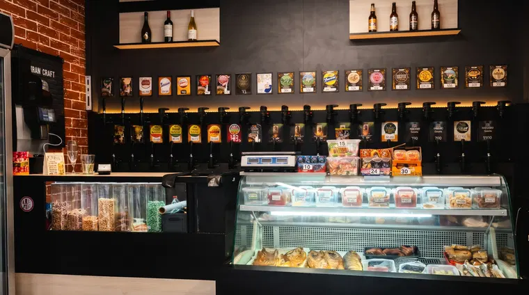
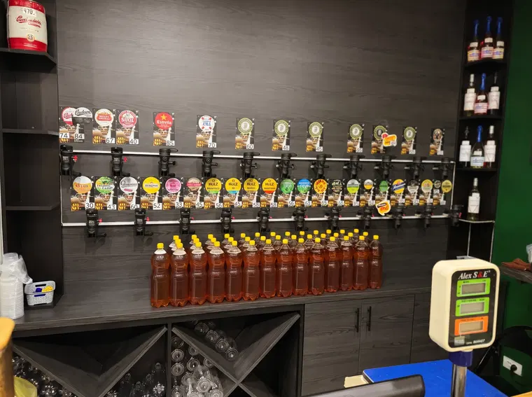

MAGAZIN DE BERE · CHIȘINĂU
Berea bună.
Gustări pe măsură.
Bere proaspătă la draft, sortimente pentru toate gusturile și afumături alese. Aproape de tine, în Botanica și Buiucani.
Două magazine. Aceeași poftă de gust bun.

GYM BEERCHIȘINĂU · MOLDOVA
32sortimente de bere*
04sortimente de vin*
03băuturi fără alcool*
02locații în Chișinău
* Sortiment declarat de magazin; disponibilitatea poate varia.
CE GĂSEȘTI LA NOI
Lucrurile simple,
făcute bine.
Fără meniu complicat. Alegi o bere bună, ceva gustos lângă ea și te bucuri de moment.

BERE LA DRAFT, ÎN CHIȘINĂU
Ai de unde
alege.
De la beri blonde și ușoare la IPA-uri aromate și sortimente brune: explorează o selecție diversă de băuturi, cu opțiuni care se schimbă în funcție de stoc.
Vezi sortimenteleDIN GALERIE
Gustul se vede.
NE GĂSEȘTI AICI
În două cartiere.
Alege magazinul cel mai aproape de tine.
HAI PE LA NOI